Aşağıda oyundaki 70 nesnenin görseli ve çocuğa gösterilecek ipucu metni var (ipuçları oyunda ortadaki kartta çıkıyor, nesnenin adı SÖYLENMEDEN). Din içeriği olduğu için metinler senin onayını bekliyor. Yanlış/eksik/hassas bulduğun ipucunun kartına dokun (⚑ işaretlenir), gerekirse hepsini bitirince “Dışa Aktar” ile listeyi bana yolla. İşaretlerin tarayıcında saklanır.
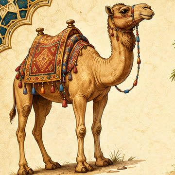
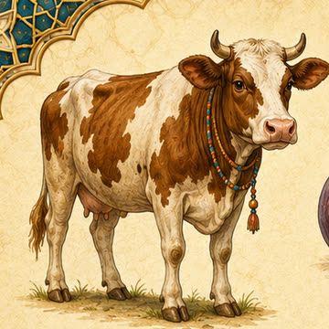
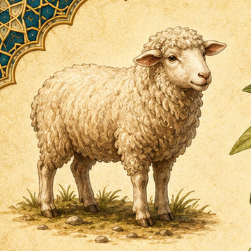
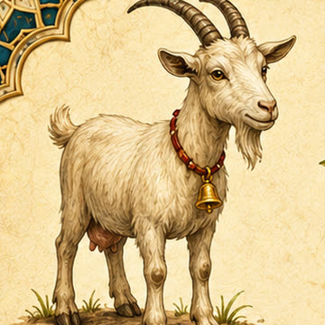
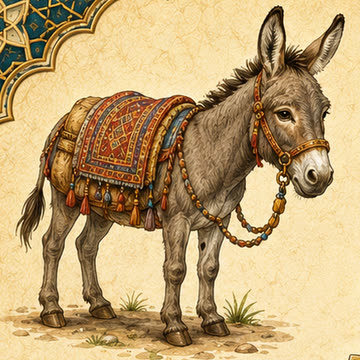
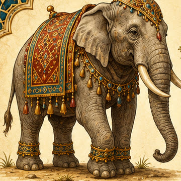
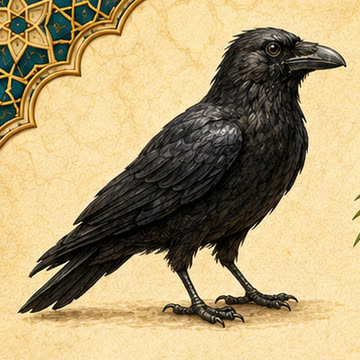
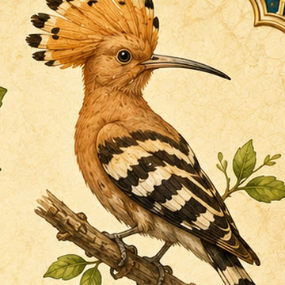
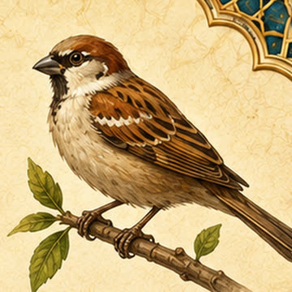
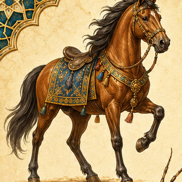
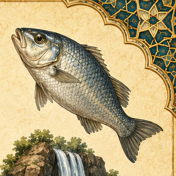
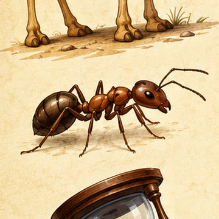
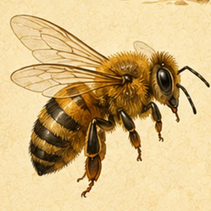
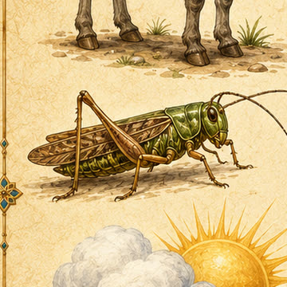
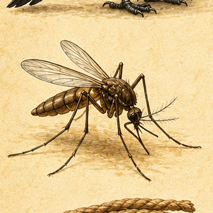
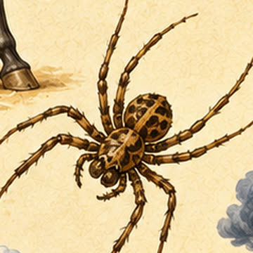
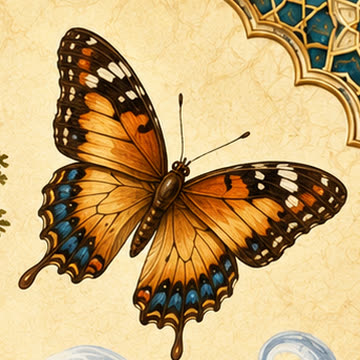
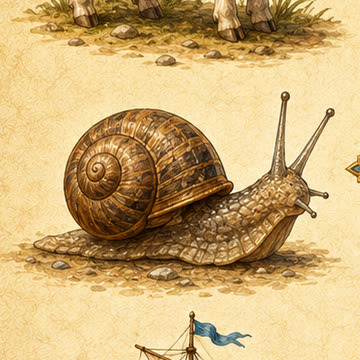
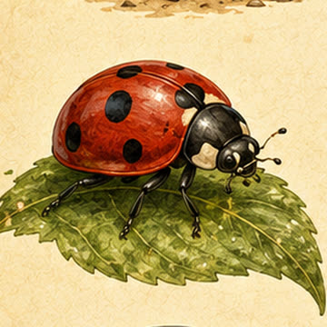
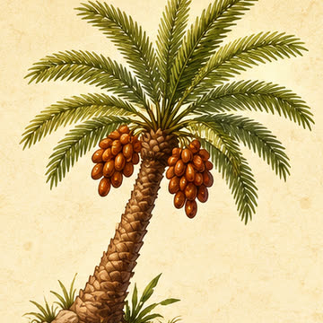
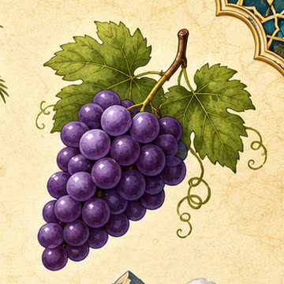
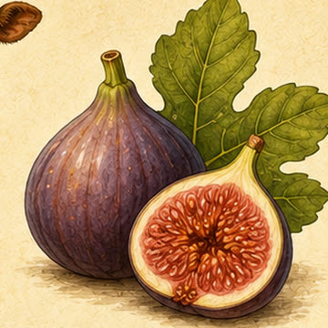
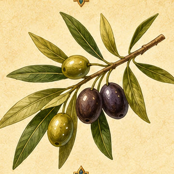
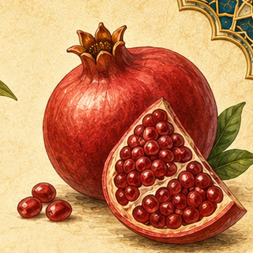
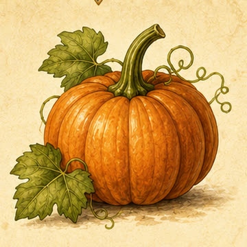
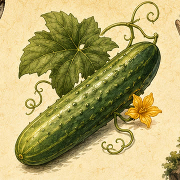
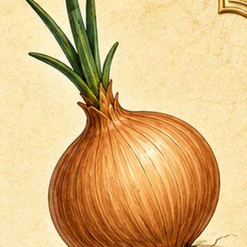
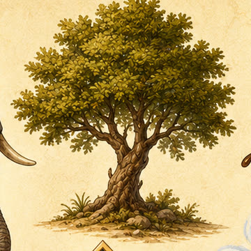
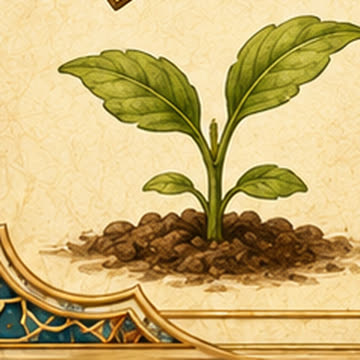
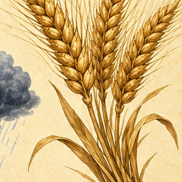
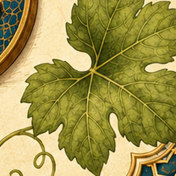
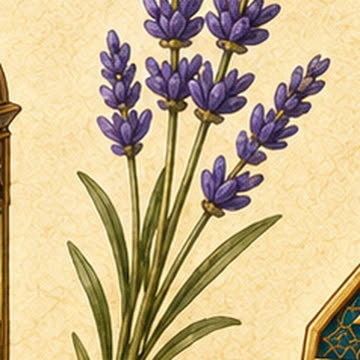
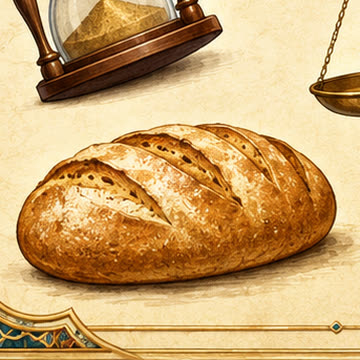
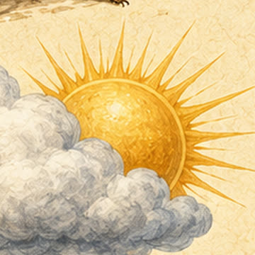
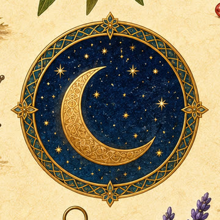
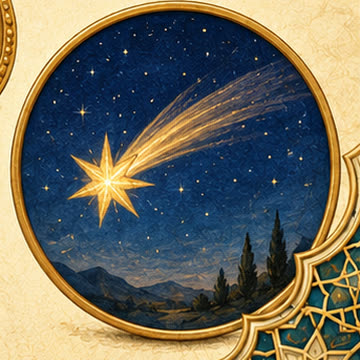
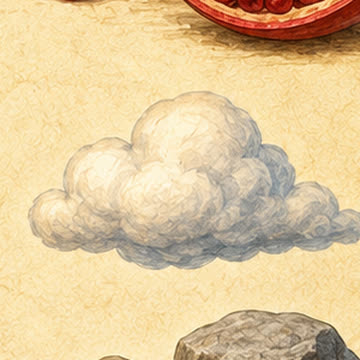
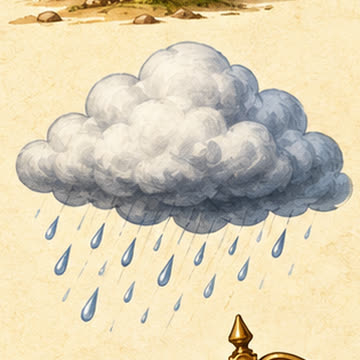
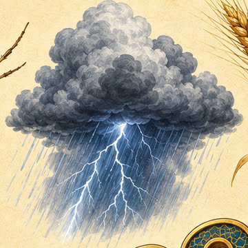
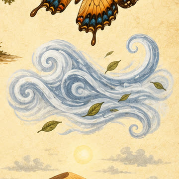
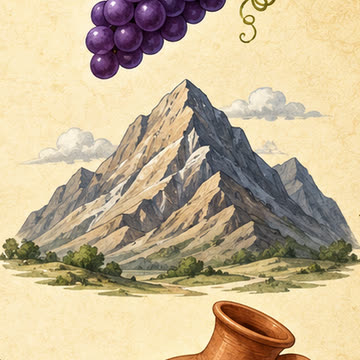
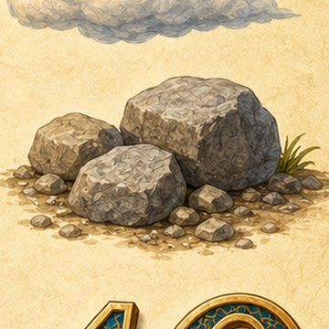
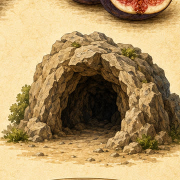
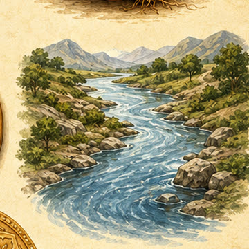
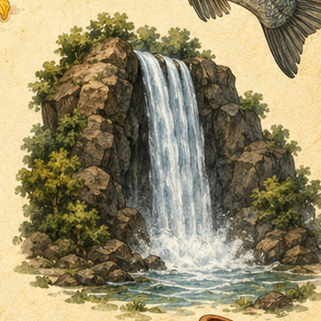
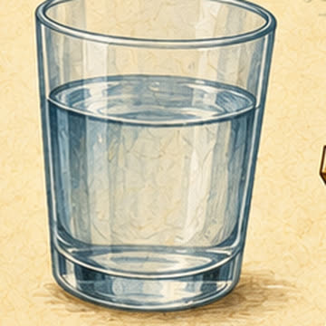
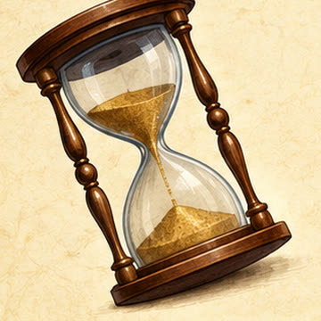
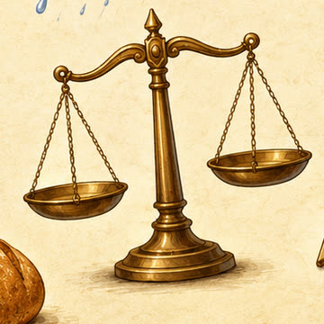
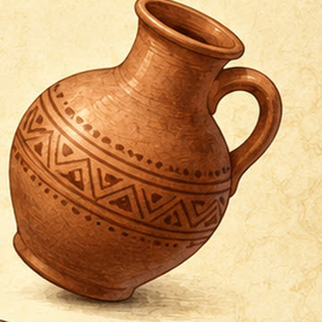
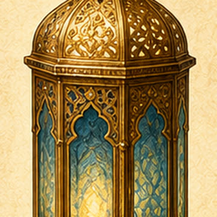